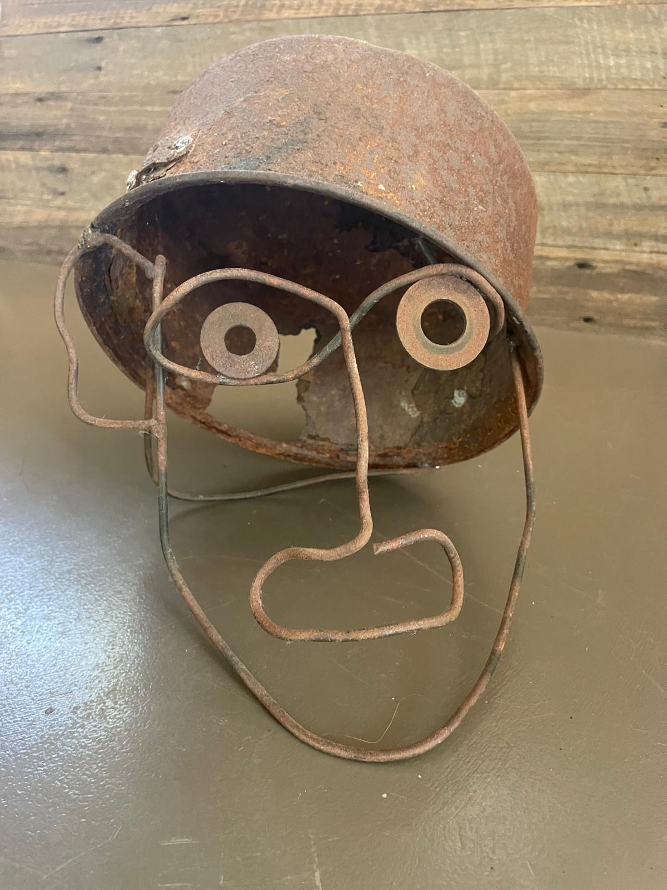
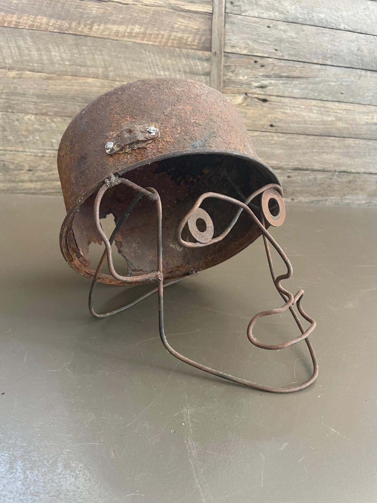
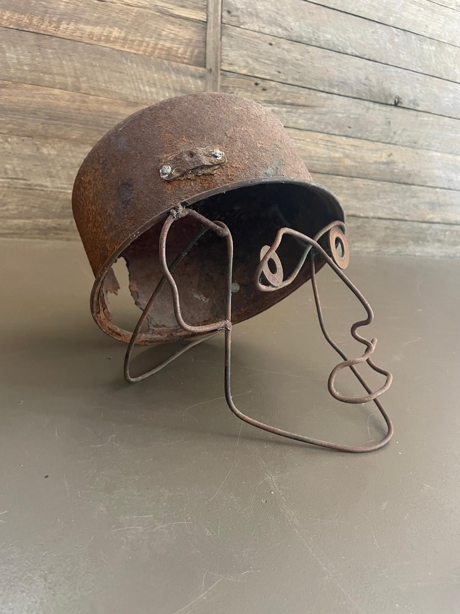

METAL / 04
1000 Yard Stare
- WORK
- Small tabletop metal sculpture
- YEAR
- 2021
- MEDIUM
- Found steel wire, washers & a scrap-metal pot · Welding
- CONTEXT
- Personal project · Undercover Artist Exhibition

Overview
1000 Yard Stare is a small, fully welded sculpture made from rusted wire, two washers and a damaged pot recovered from a farm scrap pile. Thin lines of bent wire form a three-dimensional face, while the washers give it an unsettling, faraway expression.
The work started as an experiment to develop my welding skills, but the materials suggested something more expressive: a ghostly portrait that evokes the exhaustion and trauma of war.
Design Brief
I wanted to make a decorative, coffee-table-sized object using found farm waste while practising welded connections throughout the entire piece. Restricting myself to what I could salvage was part of the challenge, as was finding a way to build a recognisable face from mostly slender lengths of wire.


Process
The idea came from the pot itself. Its shape suggested a helmet, and a crack in its side gave me the impression of an impact passing through it. That became the foundation for a hollow face rather than a solid head.
I ground rust away where the components needed to be prepared for welding. Using a vice and hammer, I bent the wire into the contours of the face and welded the pieces together. The two washers became the eyes: simple circular elements that carry much of the sculpture’s expression. The project was as much about practising the handling and joining of difficult found pieces as it was about the finished image.
Outcome
The strongest part of the finished work is the distant gaze created by the washer eyes. Combined with the open wire structure and damaged pot, it reads to me as the face of a soldier marked by conflict—present in outline, but almost absent in spirit.
As an early welding experiment, it gave me a useful opportunity to develop technical confidence while seeing how ordinary scrap components could take on an unexpected emotional quality.